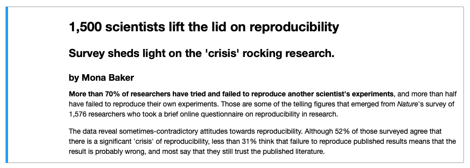

Jupyter Notebooks
Contents
1.4. Jupyter Notebooks#
1.4.1. What are Jupyter Notebooks?#
Python programs (.py files) are widely used in data analysis pipelines and software development projects that require
a more structured approach. In this course, however, we will be using mainly Jupyter Notebooks to write our code.
Jupyter Notebooks are a Python way of doing literate programming, that is, incorporating natural language, e.g., English with your source code. So rather than having a word processing document containing all your text, and a .py file containing your source code, Jupyter Notebooks combines functionality of both into one document. A Jupyter Notebook is a web application to make our analysis/code reproducible, one of the qualities that are being promoted in research to be compliant with FAIR standards (Finadble Accessible Interoperable and Reproducible).
The name Jupyter is a play on Jupyter’s core programming languages: Julia, Python, R. The circles in the Jupyter logo are attributed to the Galileo’s moons of Jupiter discovery.
Fig. 1.1 Jupyter logo. Image from jupyter.org.#
Jupyter Notebooks support different programming languages. Each programming language has a kernel which executes the code cells
in the Jupyter Notebook. For Python, the kernel is called IPython. A Jupyter Notebook has an .ipynb extension which
stands for IPython Notebook.
Fig. 1.2 The different components of the Jupyter ecosystem that enable execution of a Jupyter Notebook 1.#
Fig. 1.2 show the differnt components that interact with a Jupyter Notebook file and process it to be displayed in a web browser. The Jupyter Notebook file, kernel and browser communicate together via the Jupyter Notebook Server.
1.4.2. Creating Jupyter Notebooks in Jupyter Lab#
In this course, we will be using Jupyter Lab to create our Jupyter Notebooks.
Let’s create our first Jupyter Notebook together. First, create a folder where you want to save your Jupyter Notebooks (e.g., JupyterLabProjects). Open the terminal, go to that folder and type the following command to open Jupyter Lab:
jupyter lab
This will open the Jupyter Lab interface in your browser.
To create a new Jupyter Notebook:
Click on Notebook in the Launcher tab. This will create a new tab with the new notebook.
Right-click on the notebook name on the file browser section on the left-hand-side and name the file
first_notebook.ipynb. You have just created a jupyter notebook!
1.4.3. Running Jupyter Notebooks#
At the moment, the notebook is empty. Let us start filling it up.
In the code cell displayed on the left hand side, enter the following code
print("Hello Jupyter")as follows:To run the cell, click on the Run this cell button in the menu bar. The output of the cell will then be displayed underneath the cell:
1.4.4. Jupyter Notebook Cells#
To add content on the Jupyter Notebook, we need to add cells to it. You can add as many cells as you need in your Notebook. Cells can be of three types:
Code
Markdown
Raw
1.4.4.1. Adding Cells#
To add cells in your notebook, click on the insert cell above icon or insert cell below icon present on the right hand side of the cell you have clicked on. Once a cell is added, you can change the cell type from the cell-type dropdown box in the menu bar:
1.4.4.2. Code Cells#
You can write your Python code in code cells in your Notebook. The print("Hello Jupyter") example above was written in a code cell.
1.4.4.3. Markdown Cells#
Markdown Cells are cells that contain Markdown. Markdown is a markup language that is used to format text. To change a
notebook cell to Markdown, choose Markdown from the cell-type dropdown list.
In this section we are going to look at different formatting options in Markdown to make our text more structured and user-friendly.
1.4.4.3.1. Headings#
Below is the Markdown code you need to use to specify headings at different levels and the rendered output respectively below the code:
# Heading 1
Heading 1
## Heading 2
Heading 2
### Heading 3
Heading 3
#### Heading 4
Heading 4
1.4.4.3.2. Inline text formatting#
To make text bold use **double asterisks** or __double underscores__.
To make text italic use *asterisks* or _underscores_.
To mark text as inline code use `backticks`.
1.4.4.3.3. Line breaks#
To create a line break, put more than 2 spaces at the end of a sentence.
Exercise 1.1 (Markdown in Jupyter Notebook)
Level:
Replicate the output of the text below in a new Jupyter Notebook notebook2.

The text comes from a paper by Monya Baker
that was published in 2016 in the Nature journal that triggered the discussion about Reproducibility Crisis.
1.4.4.3.4. Links#
1.4.4.3.4.1. Linking text to Headers#
To link text to a header use [link to header](#section-title). Inside the parenthesis, titles are written in lower case letters
and spaces are converted to a hyphen, for example, [link to header](#markdown-cells) will be rendered as link to header.
1.4.4.3.4.2. Linking text to a webpage#
To create a link to a webpage use [text of link](https://jupyter.org/). This is rendered as text of link.
1.4.4.3.5. Lists#
1.4.4.3.5.1. Ordered lists#
To create an ordered list use the following syntax:
1. Item 1
2. Item 2
3. Item 3
This is rendered as:
Item 1
Item 2
Item 3
Use 4 spaces to indent an item if you would like to have sub-lists:
1. Item 1
2. Item 2
3. Item 3
a. Item 3a
i. Item 3ai
ii. Item 3aii
b. Item 3b
c. Item 3c
4. Item 4
Item 1
Item 2
Item 3
a. Item 3a
i. Item 3ai
ii. Item 3aii
b. Item 3b
c. Item 3cItem 4
1.4.4.3.5.2. Unordered lists#
In an unordered bulleted list, each item begins with *, + or -. Example:
* Item 1
* Item 2
* Item 3
* Item 3a
* Item 3ai
* Item 3aii
* Item 3b
* Item 3c
* Item 4
Will be rendered as:
Item 1
Item 2
Item 3
Item 3a
Item 3ai
Item 3aii
Item 3b
Item 3c
Item 4
1.4.4.3.6. Inserting images#
To insert an image use the following syntax: . Example:

Will be rendered as:
Exercise 1.2 (More Markdown)
Level:
Continue working on notebook2.ipynb from the Exercise 1.1. Extend the output of notebook2.ipynb to look like
this.
You can find the image used in this exercise at this location:
https://www.nature.com/news/polopoly_fs/7.36716.1469695923!/image/reproducibility-graphic-online1.jpeg_gen/derivatives/landscape_630/reproducibility-graphic-online1.jpeg
{kind=link}
1.4.4.4. Submitting/Sharing a Jupyter Notebook#
Once you have finished writing your Notebook, go to the location where you created your JupyterLabProjects folder, and you should be able to see your Notebook file/s (.ipynb) in that folder.
You can send the .ipynb file to someone or upload it to a drive for example. If you have created folders with data in your project
that are used in the .ipynb file, then make sure to also load the whole project folder that contains the folder with the data and the .ipynb file, so that the functions that
use that data are not disrupted in your code.
Make sure that you have saved your code and have run the Notebook successfully before sending or submitting it!